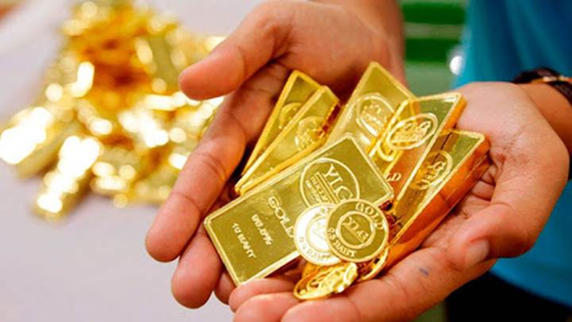

Đầu giờ sáng nay (17/10 theo giờ Việt Nam), giá vàng thế giới đang giao dịch quanh ngưỡng 1.899 USD/ounce - giảm 9 USD/ounce so với giao dịch cùng thời điểm này sáng qua. Giá vàng hôm nay hiện cao hơn khoảng 395 USD/Ounce so với đầu năm 2020. Quy theo giá USD ngân hàng, chưa tính thuế và phí, giá vàng thế giới giao ngay có giá 52,90 triệu đồng/lượng. Trong khi đó, giá vàng thế giới giao tháng 12/2020 ghi nhận trên sàn Comex thuộc New York Mercantile Exchanghe ở mức 1.902,0 USD/Ounce, giảm 6,0 USD/Ounce trong phiên và đã giảm khoảng 10 USD so với cùng thời điểm ngày 16/10. Giá vàng quay đầu sụt giảm mạnh trong phiên giao dịch cuối tuần chủ yếu do nhu cầu tài sản an toàn trên thị trường sụt giảm trong bối cảnh giới đầu tư đặt kỳ vọng dịch Covid-19 sẽ sớm được ngăn chặn khi vắc-xin Covid-19 được triển khai trên diện rộng. Mới đây, thành phố Gia Hưng, tỉnh Chiết Giang, miền Đông Trung Quốc đã bắt đầu cung cấp vaccine phòng COVID-19 cho một số người dân với giá 60 USD (khoảng 1,4 triệu đồng) cho 2 liều tiêm. Đây là vaccine thử nghiệm do hãng dược Sinovac Biotech phát triển. Trung Quốc cũng đã cung cấp vaccine này cho hàng trăm nghìn công nhân trong các ngành nghề thiết yếu, tại bến cảng, bệnh viện và những khu vực có nguy cơ lây nhiễm cao. Ngoài ra, vàng giảm giá trong bối cảnh USD giảm giá nhiều so với euro, giá cổ phiếu tại Mỹ, châu Âu đảo chiều, sau khi "đỏ" sàn vào phiên giao dịch trước. Nhà đầu tư mua vàng với số lượng nhỏ để chờ đợi những thông tin rõ ràng hơn về gói kinh tế mới của Mỹ, có thể tác động mạnh đến xu hướng của giá vàng trong thời gian tới. Về xu hướng giá, các chuyên gia cho rằng vàng vẫn đang trong xu hướng tăng giá. Một số chuyên gia khuyến nghị mua vàng khi giá giảm và kỳ vọng vào việc các gói kích thích kinh tế sau cuộc bầu cử Tổng thống Mỹ sẽ giúp hỗ trợ giá vàng. Theo đó, vàng được nhận định sẽ leo thang trở lại, thậm chí vượt ngưỡng 2.000 USD/ounce trước cuộc bầu cử Mỹ bởi nhiều người tin tưởng gói kích thích sẽ khó lòng được thông qua trước 3/11.
Tại thị trường trong nước, sáng nay, Công ty Vàng bạc đá quý Sài Gòn niêm yết giá vàng SJC mua vào bán ra ở mức 55,85-56,3 triệu đồng/lượng, chưa có thay đổi so với cùng giờ giao dịch hôm qua. Vàng Doji niêm yết giá vàng ở mức 55,7-56,2 triệu đồng/lượng, giảm 50.000 đồng/lượng so với sáng qua. Phú Quý SJC niêm yết giá vàng ở mức 55,95-56,25 triệu đồng/lượng, giảm 50.000 đồng/lượng chiều bán ra so với phiên hôm qua.